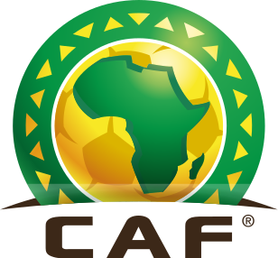
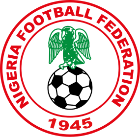
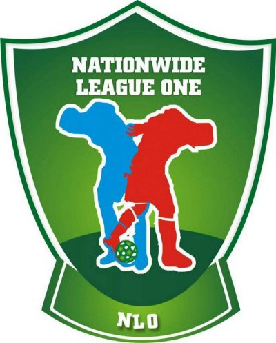
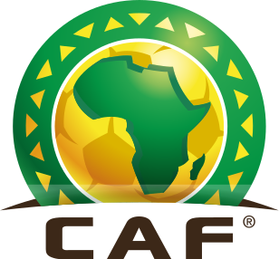
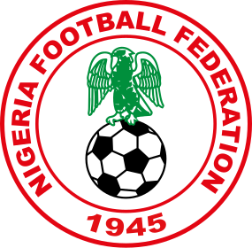
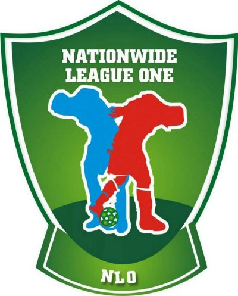

Date of Birth: 08 February 2007
Place of Birth: Lagos State
Nationality: Nigerian
Height: 1.95 m
Weight: 70 kg
Preferred Positions: Attacking Midfielder (AMF) / Centre Forward (CF)
Dominant Foot: Both feet
Dedicated and ambitious amateur footballer with strong technical ability and tactical awareness. Demonstrates excellent versatility across attacking roles, combining physical presence with creative playmaking. Possesses a strong work ethic and team-oriented mindset, eager to develop skills further and contribute effectively on and off the pitch.
 




